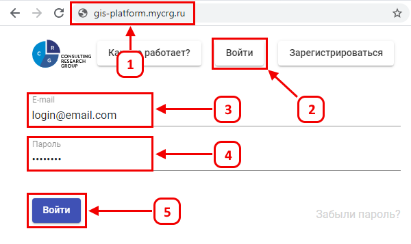

Для авторизации в геоинформационной системе Вам, требуется логин и пароль выданной Вам учетной записи на портале.
Для входа в учётную запись на портале, требуется:
-
Запустить приложение через браузер, для этого требуется ввести интернет-адрес геоинформационной системы в
адресной строке браузера.
-
Нажать кнопку «Войти», для отображения полей ввода учётных данных.
-
Ввести логин от учётной записи в поле «E-mail».
-
Ввести пароль от учётной записи в поле «Пароль».
-
Нажать кнопку «Войти» синего цвета.
